在前两章中，我们学习了卷积神经网络和递归神经网络，这两种网络对于机器翻译、图像字幕、对象识别等顺序任务都非常有效。但是我们也看到它们有局限性。rnn有长期依赖的问题。在这一章中，我们将讨论注意力机制，这种机制越来越受欢迎，并在语言和视觉相关的任务中显示出令人难以置信的结果。
本章将涵盖以下主题:
- 注意力概述
- 理解神经图灵机
- 探索注意力的类型
- 变形金刚(电影名)
我们开始吧！
当我们(在现实世界中)生活的时候，我们的大脑并不是每时每刻都在观察我们环境中的每一个细节；相反，我们关注(或更加关注)与手头任务相关的信息。例如，当我们开车时，我们能够调整我们的焦距来聚焦不同的细节，其中一些更近一些，另一些更远一些，然后根据我们观察到的情况采取行动。同样，当我们与他人交谈时，我们通常不会仔细听每一个字；我们只听说话的一部分，并用它来推断与一些单词的关系，以此来判断对方在说什么。通常，当我们在读/听某人说话时，我们可以根据我们已经读过/听过的内容，用一些词来推断这个人接下来要说什么。
但是深度学习为什么需要这些注意机制呢？让我们沿着记忆的轨迹漫步到第十章、的递归神经网络，在那里我们学习了序列到序列模型(RNNs)，正如我们所见，它可以用于语言到语言的翻译等任务。我们应该记得，这些类型的模型具有编码器-解码器架构，其中编码器接收输入并将信息压缩到嵌入空间(或上下文向量)，而解码器接收上下文向量并将其转换回所需的输出。编码器和解码器都是rnn(可能带有用于长期记忆的LSTMs或gru)。
在前一章中，我们还遇到了rnn的一些限制，特别是梯度消失或爆炸的问题，这阻碍了长期依赖性。这样，注意力机制就产生了。它的唯一目的是解决RNNs面临的记忆长句的问题。
在RNNs中，每个时间步的隐藏状态都将前一个隐藏状态作为输入(它包含到目前为止看到的序列的上下文)和该时间步的输入，然后将最终的隐藏状态传递给解码器序列。注意机制的不同之处在于在上下文向量和整个输入序列之间建立了联系。这样，我们再也不用担心有多少最终会被遗忘。与人工神经网络中的所有其他连接类似，这些注意力连接是加权的，这意味着它们可以针对每个输出进行调整。本质上，上下文向量控制输入和目标(输出)之间的对齐。
让我们假设我们有一个输入、 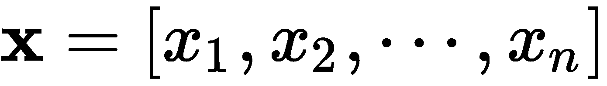、和一个目标、  ，其中由编码器产生的隐藏状态(为了简单起见，是一个普通的RNN，尽管这可以是任何RNN架构)将是 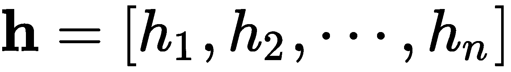 。这里解码器的隐藏状态与我们之前看到的略有不同:
，其中由编码器产生的隐藏状态(为了简单起见，是一个普通的RNN，尽管这可以是任何RNN架构)将是 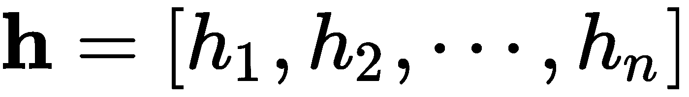 。这里解码器的隐藏状态与我们之前看到的略有不同:
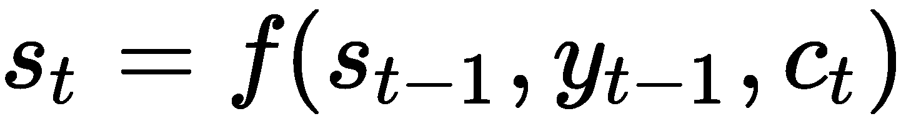
对于所有 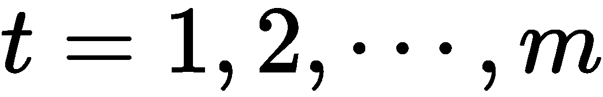 。这里， c t (上下文向量)是来自输入的所有隐藏状态的总和。这由比对分数加权，使得 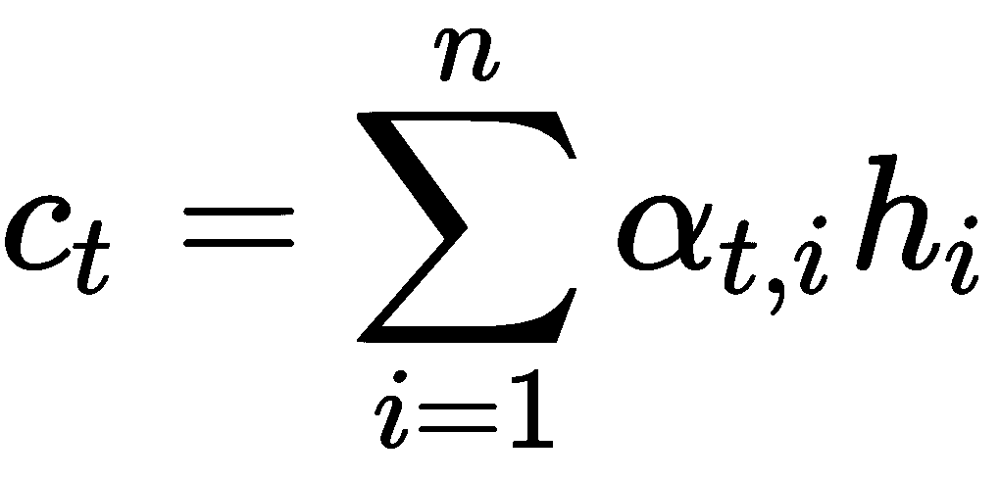 和 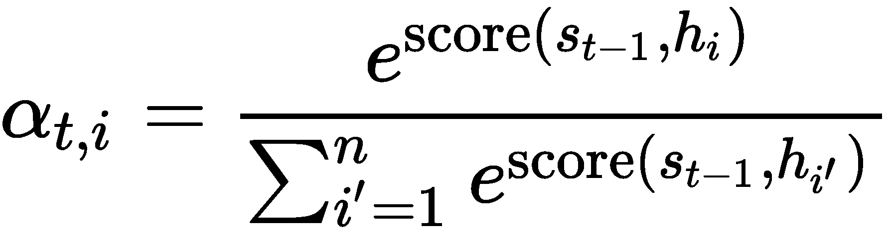、通过基于两者的匹配程度分配分数来确定 y t 和 x i 的比对。这里的每个 α t，IT34】是一个权重，它决定了每个源的隐藏状态应该对每个输出产生多大程度的影响。
前面的得分函数由具有单个隐藏图层的MLP参数化，并使用以下公式进行计算:
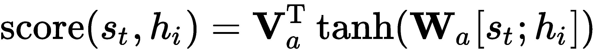
这里， V a 和 W a 是要学习的权重矩阵。
在我们深入研究各种注意力机制的内部工作方式之前，我们先来看看神经图灵机。
图灵机(Turing machine)由艾伦·图灵(Alan Turing)于1936年提出，它是一种计算的数学模型，由一条无限长的磁带和一个磁头组成，通过读取、编辑和移动磁带上的符号来与磁带进行交互。它的工作原理是根据一组预定义的规则来操作条上的符号。胶带由无数个单元格组成，每个单元格可以包含三个符号之一，即0、1或空白(" ")。因此，这被称为三符号图灵机。不管它看起来有多简单，它能够模拟任何计算机算法，不管它有多复杂。完成这些计算的磁带可以被认为是机器的内存，类似于我们现代计算机的内存。然而，图灵机不同于现代计算机，因为它具有有限的内存和计算限制。
在第10章、递归神经网络中，我们了解到这种类型的ANN是图灵完全的，这意味着当它们被适当训练时，它们可以模拟任何任意的程序。但这只是理论上的。在实践中，我们看到情况并非如此，因为它们确实有其局限性。为了克服这些限制，2014年，Alex Graves等人提出用大型可寻址存储器(类似于TM中的磁带)来增强RNN，从而将其命名为神经图灵机 ( NTM )。正如作者所述，这个模型是一个可微分的计算机，可以通过梯度下降进行训练，产生一个学习程序的实用机制。
NTM借用了与短时记忆相同的工作记忆(人类认知中的一个过程)的思想，并将其应用于RNNs，从而使其具有使用注意力控制器选择性地读写存储器的能力。我们可以在下图中看到NTM的样子:
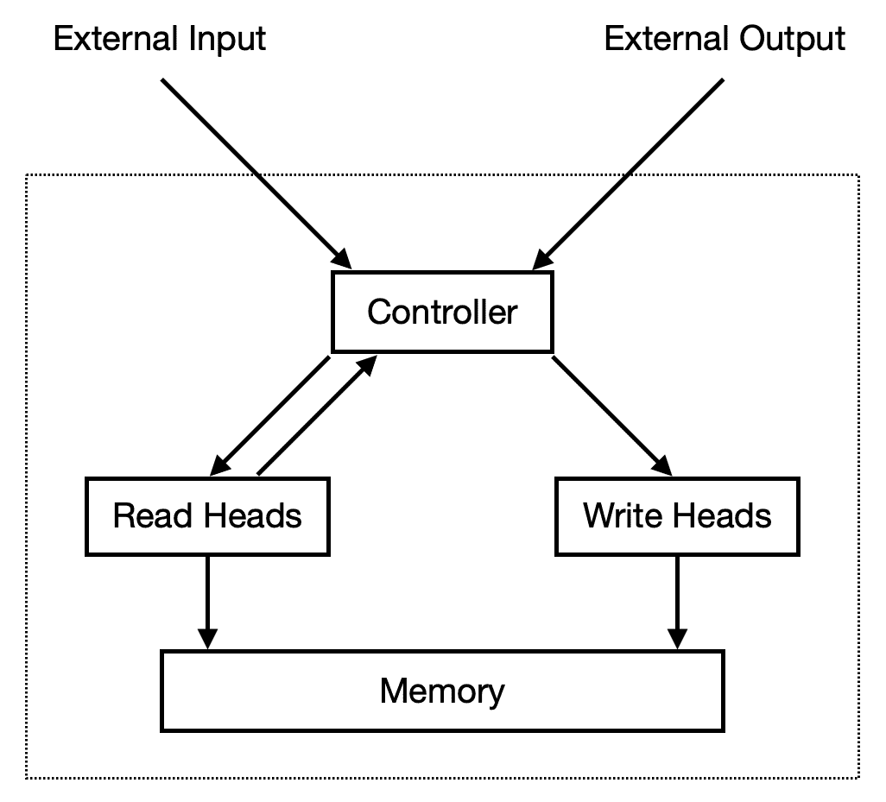
在上图中，我们可以看到NTM有两个主要组件——控制器和内存，前者是一个神经网络，后者包含经过处理的信息。控制器通过接收一个输入向量和输出一个输出向量与外部世界进行交互，但它不同于前面章节的ann，因为它还使用选择性读写操作与存储器矩阵进行交互。
假设我们的内存是一个 N × M 矩阵，用 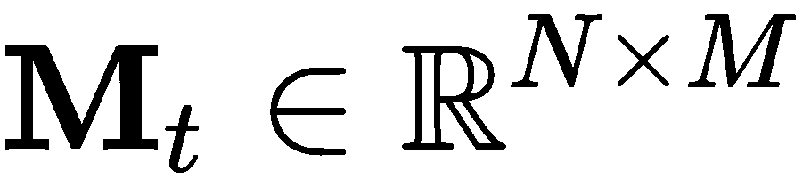 表示，其中 t 是时间步长， N 是行数(内存位置)，而 M 是每个位置的向量大小。然后，我们有了另一个权重向量， w t ，它决定了对内存中各个位置(即矩阵的行)指定多少关注度。权重向量中的每一个 N 权重都是归一化的，这告诉我们 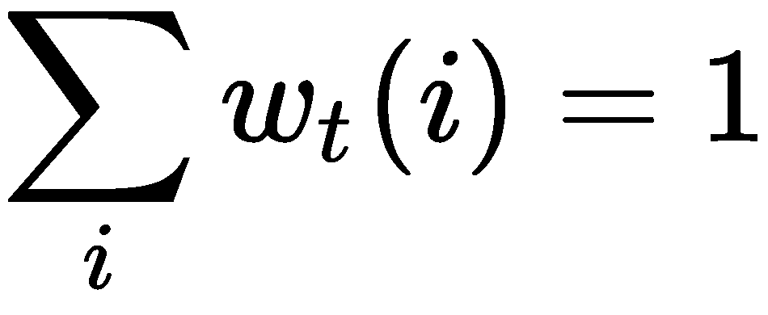 和对于所有的 i ，我们有 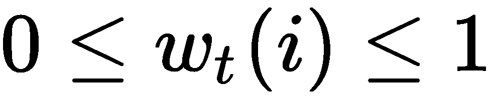 ，其中 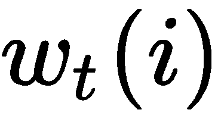 是 w t 的 i th 元素。
磁头返回的读取向量 r t 可以计算如下:
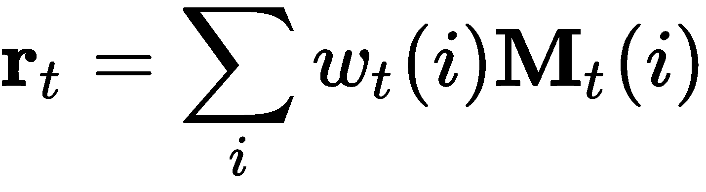
这里， 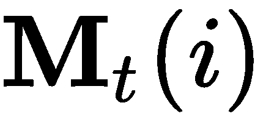 是第个 内存向量。从前面的等式中，我们还可以看到 r t 可以在重量和内存方面进行区分。
写操作从LSTMs的输入和遗忘门获得灵感，其中一些信息被擦除，然后被替换(或添加)。
然后使用两个公式更新存储器，第一个公式擦除存储器，第二个公式增加存储器:
这里， 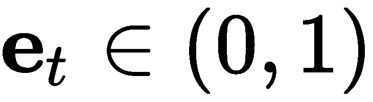 是擦除向量， a t 是添加向量， 1 是只包含1的向量。从这些等式中，我们可以看到，只有当权重和擦除向量都等于1时，特定位置的内存才会被擦除，否则它将保持不变。因为擦除和添加操作是可区分的，所以整个写入操作也是可区分的。
现在我们知道了读写操作是如何工作的，让我们深入研究一下权重是如何产生的。权重是两种机制(基于内容的寻址机制和基于位置的寻址机制)组合的输出。
这种寻址机制集中于键值 k t 与存储器行之间的相似性，键值由控制器基于其接收的输入输出。基于这种相似性，它创建了一个注意力向量。使用以下公式计算:
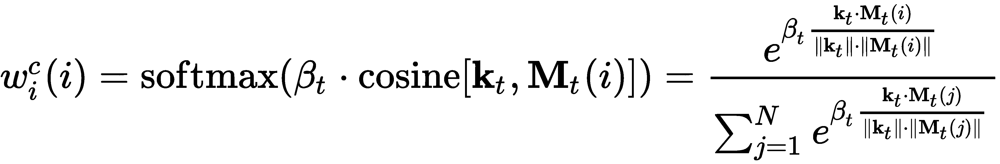
这里， 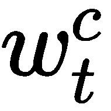 是归一化权重， β t 是强度乘数。
在我们了解基于位置的寻址如何工作之前，我们需要定义插值门，它将当前时间步基于内容的注意力与前一时间步注意力向量中的权重混合在一起。这可以通过以下公式来实现:
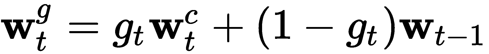
这里， 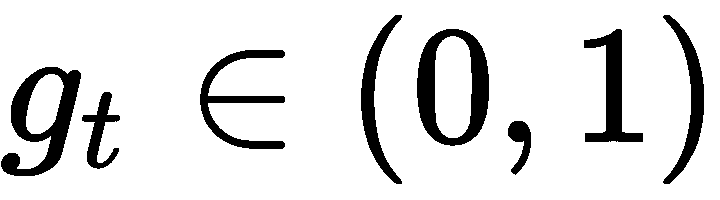 是标量插值门。
基于位置的寻址通过将注意力向量中的值相加来工作，每个值由移位权重 s t 来加权，这是允许的整数移位的分布。例如，如果它可以在-1和+1之间移动，那么允许执行的移动是-1、0和+1。现在，我们可以将这种旋转公式化，使得移动权重作为圆形卷积应用于 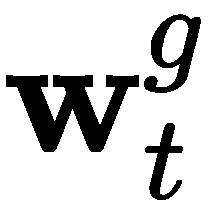 。我们可以在下面的等式中观察到这一点:
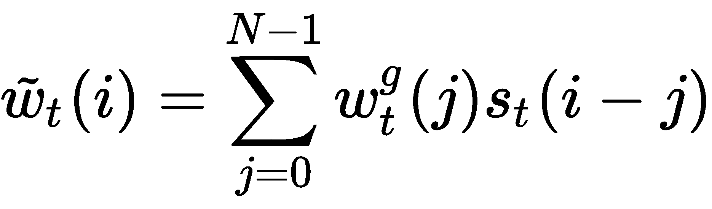
为了防止由移动权重引起的任何泄漏或模糊，我们使用以下等式锐化注意力向量 w t :
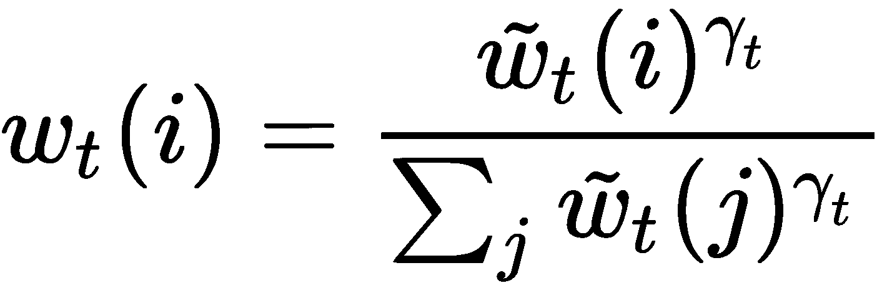
这里， 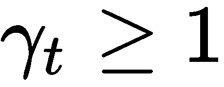 是一个正标量值。
最后，控制器输出的值对于每个读写头都是唯一的。
注意力已被证明在机器翻译中非常有效，以至于它已被扩展到自然语言处理、统计学习、语音理解、对象检测和识别、图像字幕和视觉问题回答。
注意力的目的是估计两个或多个元素之间的关联程度。
然而，关注并不只有一种。有许多类型，例如以下几种:
- 自我关注:捕捉一系列输入的不同位置之间的关系
- 全局或软关注:关注整个输入序列
- 局部或硬注意:只关注输入序列的一部分
让我们更详细地看看这些。
自我注意发现输入序列的不同位置之间的关系，然后计算相同输入序列的表示。你可以认为这是对输入的总结。这有点类似于我们在前一章中看到的LSTM的工作方式，它试图学习以前的输入和当前的输入之间的相关性，并决定什么是相关的，什么是不相关的。
这些类型的注意力是为图像生成标题而创建的。CNN首先用于提取特征，然后将它们压缩成编码。为了解码，LSTM被用来产生描述图像的单词。但是现在这并不重要——区分软注意力和硬注意力才重要。
在软注意中，在训练期间学习的对准权重被软地放置在图像中的片上，使得它更关注图像的一部分而不是其他部分。
另一方面，在努力注意中，我们一次只关注图像的一部分。这只是对关注哪里做出了一个二元决定，与软注意力相比，它更难训练。这是因为它是不可微的，需要使用强化学习来训练。因为强化学习超出了本书的范围，所以我们不会涉及注意力。
全局注意与软注意的工作方式有一些相似之处，因为它考虑了所有的输入。
局部注意不同于整体注意，因为它可以被视为硬注意和软注意的混合，并且只考虑输入的子集。它首先预测当前输出的单个对齐位置。然后，以当前输入为中心的窗口被用于创建上下文向量。
对于那些对标题(变形金刚)感到兴奋的人来说，这一节很遗憾地与擎天柱或大黄蜂无关。现在，严肃地说，我们已经看到注意力机制与RNNs和CNN等架构配合得很好，但它们也足够强大，可以单独使用，正如Vaswani在2017年发表的论文中所证明的那样。
transformer模型完全是由自我注意机制构成的，用于执行序列到序列的任务，而不需要任何形式的循环单元。等等，但是怎么做？让我们来分解一下架构，看看这是如何实现的。
rnn接收编码输入，然后对其进行解码，以便将其映射到目标输出。然而，转换器的不同之处在于，它将编码视为一组键值对( K ， V )，其维数(= n )等于输入(序列)的长度。解码器被视为一个查询， Q ，其维度(= m )等于输出(序列)的长度。每个输出都是通过将键值对映射到一个查询来创建的。
此处的关注度是使用缩放点积计算的，该点积使用以下公式计算值的加权和:
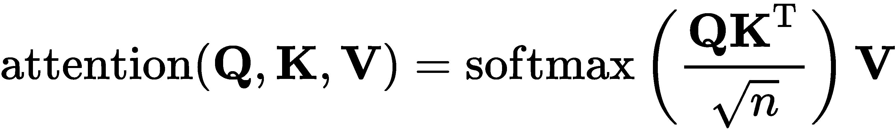
现在，我们不再只计算一次关注度，而是并行计算多次。这被称为多头注意力。在下图中，我们可以看到比例点积注意力和多头注意力计算的可视化结果:
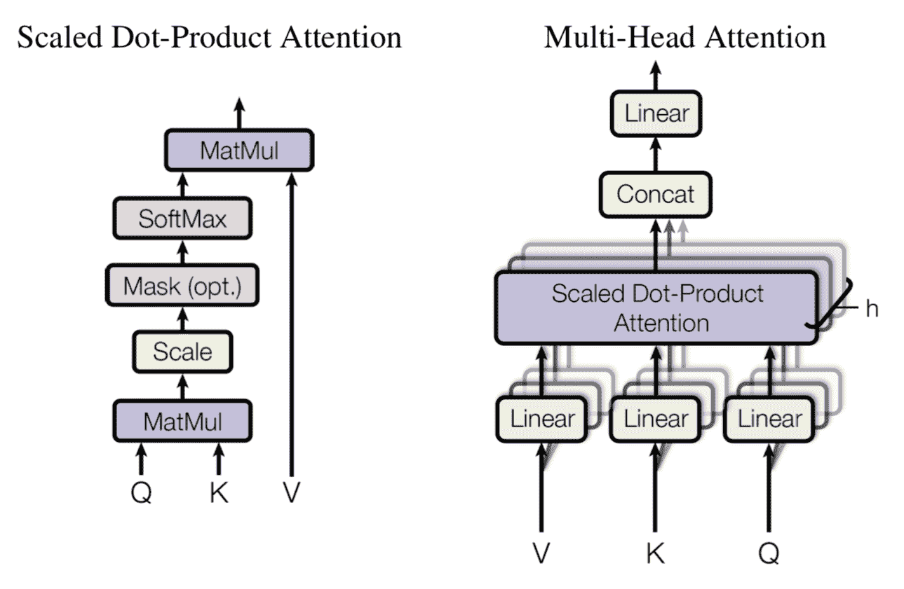
这些注意力计算的输出然后被连接，我们对它们应用线性变换以确保它们的维度与预期的相匹配。其原因是，多头注意力使模型能够同时聚焦于不同位置的不同子空间的信息，而这是单个注意力无法做到的。其工作原理如下:
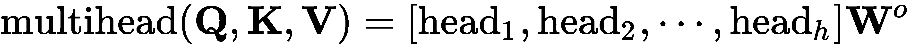
这里，每个水头计算如下:
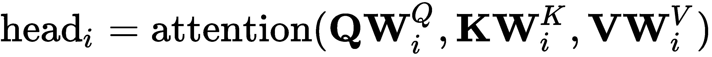
这里， 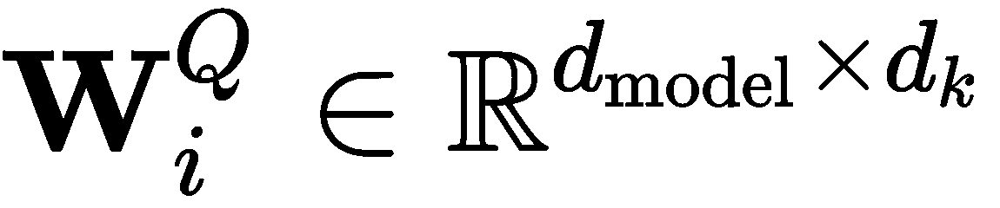 ， ， ， 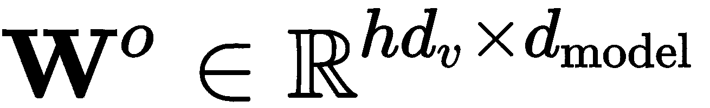 为可训练参数。
现在让我们把注意力转向编码器和解码器。
编码器由六个相同层的堆叠组成，每个层由两个子层组成。这些子层中的第一个是多头自我关注层，而第二个是FNN，其将相同的权重分别应用于整个序列中的每个元素。这类似于卷积，卷积将在每个位置应用相同的核。FNN可以表示如下:
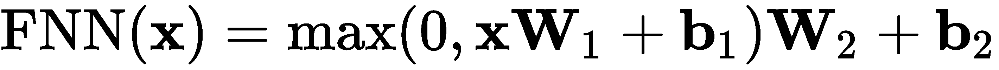
每一个都有一个层规范化的剩余连接。这样做的目的是从整体上识别文本/图像中的特定信息，也就是说，我们需要更加注意的最重要的部分。该编码器的计算如下:
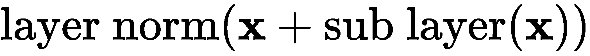
编码器架构如下所示:
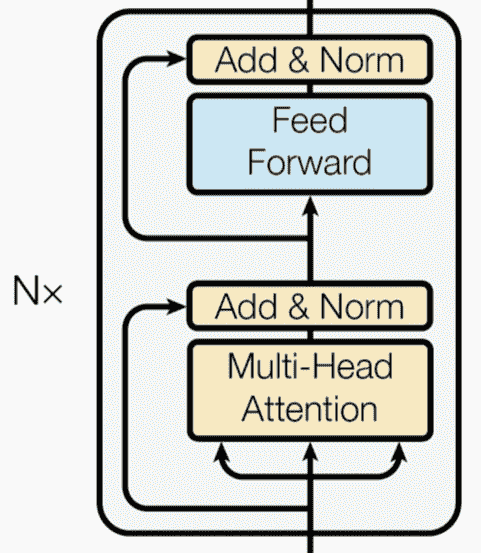
前一层归一化转换输入，使其平均值为零，方差为一。它使用以下公式来实现这一点:
在这里， 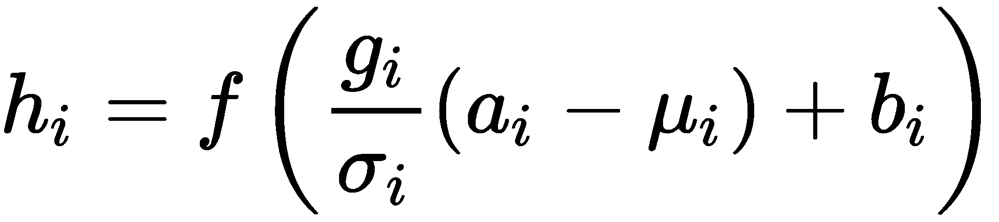 。
解码器(其架构如下图所示)也由六个相同层的堆栈组成；然而，这些层中的每一层都由三个子层组成。这两个子层的前两层是多头注意层，每一层后面都是层归一化，这是残差连接所在。使用遮罩修改第一个子层，以便位置不会到达后续位置，并尝试使用未来预测来预测当前位置:
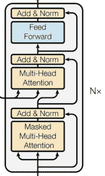
然后，解码器的输出被传递到线性层，这就是我们应用softmax的地方。
在该架构中，我们可以很容易地注意到，在序列中没有回旋或循环连接可供模型使用，这是它看到这些信息的地方。为了解决这个问题，该方法的作者使用位置编码将序列中元素的绝对和相对位置信息注入到位于编码器和解码器底部的输入嵌入中。
这为我们提供了完整的变压器架构，如下图所示:
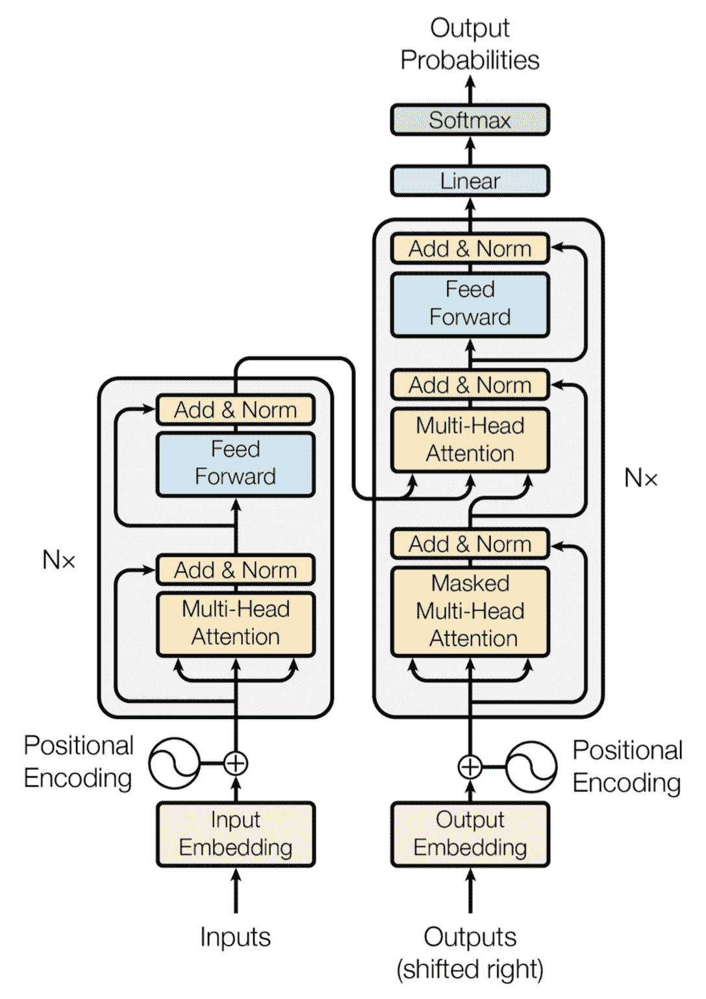
位置编码通过以下两个等式计算:
这里， pos 是位置， i 是尺寸。
现在，让我们结束这一章。
在这一章中，我们了解了深度学习中一个热门的新领域，称为注意机制。这些用于允许网络集中于输入的特定部分。这有助于网络克服长期依赖的问题。我们还了解了如何使用这些注意力机制来代替RNNs等顺序模型，以在机器翻译和句子生成等任务中产生最先进的结果。然而，它们也可以用于聚焦图像的相关部分。这可以用于视觉问答等任务，我们可能希望我们的网络告诉我们在给定的场景中正在发生什么。
在下一章，我们将学习生成模型。